Karar Sizde Kalsın, İşçiliği AI Yapsın
Görselleştirmede zamanın büyük kısmı yaratıcı karara değil işçiliğe gidiyor: doku hazırlamak, bitki ve insan eklemek, render'ı büyütmek, varyant çıkarmak. Üretken yapay zekâ bu işçiliği devralıyor — karar tasarımcıda kalıyor.

Chaos'un kendi ifadesiyle amaç, yaratıcılığı devralmak değil saatler süren tekrar işini kısaltmak: araçlar tekrarlayan görevleri otomatikleştiriyor, yeni keşif yolları açıyor ve son bir cila katmanı sağlıyor. Karar verme yetkisi tasarımcıda kalıyor.
Pratikte bu şu araçlar demek: Veras ile 2B görsel, eskiz veya 3B modelden metin istemiyle gerçekçi görselleştirme (Enscape, V-Ray ve Corona ile bütünleşir; SketchUp, Rhino ve Revit içinde çalışır). AI Material Generator ile herhangi bir fotoğraftan dikişsiz, render'a hazır PBR malzeme. AI Image Enhancer ile bitki ve insan gibi tamamlayıcı öğelere yeniden render almadan detay. AI Upscaler ile düşük çözünürlüklü çıktının tek tıkla 2x/4x büyütülmesi. AI Mood Match ile referans fotoğrafın ışık atmosferinin sahneye taşınması.
Bunun yanına Autodesk tarafında Forma'nın erken aşama analizleri ve Fusion'ın jeneratif tasarımı, Lumion Cloud'un AI malzeme üreticisi ve Adobe Firefly'ın ticari kullanıma uygun üretken görsel araçları geliyor. Cadbim bu araçları tek tek satmak yerine mevcut render hattınıza oturtur; hangi adımın otomasyona değdiğini birlikte belirleriz.
Konsept ve keşif
Eskiz veya kütle modelinden metin istemiyle hızlı alternatif üretimi; müşteriye erken aşamada seçenek sunma.
Malzeme üretimi
Fotoğraftan PBR malzeme; şantiye veya numune fotoğrafı doğrudan sahne malzemesine dönüşür.
Son işlem ve cila
Bitki, insan ve büyük yüzeylerde detay artırma; çözünürlük yükseltme ile render süresinden tasarruf.
Kurumsal çerçeve
Hangi işte hangi aracın kullanılacağı, çıktı sahipliği ve lisans koşulları yazılı bir kullanım politikasına bağlanır.
Konseptten Görsele: Veras
2B görsel, eskiz veya 3B modelden metin istemiyle gerçekçi görselleştirme. Enscape, V-Ray ve Corona ile bütünleşir; SketchUp, Rhino ve Revit içinde çalışır.
Fotoğraftan PBR Malzeme
AI Material Generator ile herhangi bir fotoğraf dikişsiz, render'a hazır malzemeye dönüşür. Chaos Cosmos kapsamında; Enscape, V-Ray ve Corona kullanıcılarına açık.
Çözünürlük Yükseltme (16K)
AI Upscaler ile render çıktısı tek tıkla 2x veya 4x büyütülür; yeniden render almadan keskin sonuç, saatlerce render süresinden tasarruf.
Detay ve Cila
AI Image Enhancer bitki, insan ve büyük yüzeylere (asfalt, tuğla, beton) gerçekçilik katar; kir, yıpranma ve yaşlanma denetimli biçimde eklenir.
Referans Fotoğraftan Atmosfer
AI Mood Match referans görselin ışık koşullarını çözümleyip V-Ray Sun & Sky veya görsel tabanlı aydınlatmayı buna göre kurar.
Kurumsal Kullanım Politikası
Hangi işte hangi aracın kullanılacağı, çıktı sahipliği, müşteri gizliliği ve lisans koşulları yazılı bir politikaya bağlanır — teslimde sürpriz olmaz.
Çözümün her adımında devreye giren yazılım ve donanımlar.

M&E Collection
3ds Max, Maya ve Arnold ile üretim ölçeğinde görselleştirme ve animasyon altyapısı.

Autodesk Forma
Erken aşama kütle, güneşlenme ve rüzgâr analizleriyle veri destekli tasarım kararı.

Autodesk Fusion
Jeneratif tasarım: yük ve kısıtlardan üretilebilir alternatiflerin otomatik türetilmesi.

Chaos Veras
Metin istemiyle AI görselleştirme; tasarım yazılımınızın içinden çalışır.

Chaos Cosmos
Varlık ve malzeme kütüphanesi; AI Material Generator bu kapsamda sunulur.

Chaos V-Ray & Enscape
AI araçlarının bağlandığı fiziksel tabanlı render ve gerçek zamanlı görselleştirme.

Chaos Corona
AI Material Generator ve gelişmiş malzeme/atmosfer araçlarıyla mimari görselleştirme.
Lumion Cloud
AI Material Generator ve görsel iş birliği ortamı; tüm Lumion planlarına dahil.

Adobe Firefly
Ticari kullanıma uygun üretken görsel araçları; sunum ve pazarlama görselleri.

HP Z Workstation
GPU belleği ve çekirdek sayısı AI ve render adımlarının süresini doğrudan belirler.
Bu çözümü kurduğumuz sektörler ve iş akışları.
Mimarlık
Konsept keşfi, sunum görseli ve müşteri onay sürecinin hızlandırılması.
İç Mimarlık
Malzeme ve atmosfer denemelerinin fotoğraftan üretilerek çoğaltılması.
Medya & Eğlence
Ön görselleştirme, kavramsal sanat ve son işlem adımlarında hız kazancı.
Otomotiv
Renk, kaplama ve ortam varyantlarının sunum öncesi hızla denenmesi.
Cadbim Teknik Destek kanalında yayınladığımız, tasarım ve görselleştirmede yapay zekâ kullanımına dair oturumlar.

Autodesk Forma Board — Generate AI Image ile konsept görseller
Erken aşamada kütle modelinden yapay zekâ destekli konsept görsel üretimi.

Yapay zekâ destekli tasarım ve imalat iş ortağınız: Autodesk AI
Autodesk portföyünde yapay zekânın tasarım ve üretim akışına nereden girdiği.

Adobe Firefly — Yapı Referansı
Referans görselin yapısını koruyarak üretken görsel türetme.

Creative Cloud + AI: yaratıcı süreçlerin yeni standardı
Üretken yapay zekânın Creative Cloud iş akışına gömülü hâli.

Adobe — üretken yapay zekâ ile hızlı ve yenilikçi iş akışları
Varyant üretimi ve tekrar eden işlerin kısaltılması.
Beş adımlı uygulama metodolojimizle sürecin tamamını yönetiyoruz: ihtiyaç analizi, kurgu, devreye alma, yaygınlaştırma ve sürdürme.
Mevcut Hattın Çıkarılması
Hangi işte hangi motoru kullandığınız ve zamanın nereye gittiği ölçülür; otomasyona en değecek adım buradan çıkar.
Lisans Envanteri
Enscape, V-Ray veya Corona kullanıyorsanız bazı AI araçları zaten kapsamınızda olabilir; yeni lisans almadan başlanabilecek yerler işaretlenir.
Pilot İş
Gerçek bir projede yalnızca yaratıcı karara dokunmayan adımlar denenir: çözünürlük yükseltme, malzeme üretimi, detaylandırma.
Kullanım Politikası
Hangi araç hangi işte kullanılır, çıktı sahipliği ve müşteri gizliliği nasıl yönetilir — yazılı hâle getirilir.
Ekip Yetkinliği
İstem yazma, malzeme üretimi ve son işlem için rol bazlı eğitim; araç ekibin alışkanlığına yerleşene kadar takip.
Yüzlerce kurulumdan damıtılmış, işleyen iyi uygulama setimiz.
Karar insanda kalır
Yapay zekâ işçiliği devralır; kompozisyon, ışık ve malzeme kararı tasarımcıda kalır.
Dirençsiz adımdan başla
İlk uygulama çözünürlük yükseltme ve malzeme üretimi gibi kimsenin işini almayan adımlardır.
Final hâlâ fiziksel motorda
Müşteriye teslim edilen görsel ölçülü ve doğru ışıklı bir motordan çıkar; AI konsepti hızlandırır.
Çıktı ve lisans netliği
Ticari kullanım koşulları yayına almadan önce güncel şartlarla teyit edilir.
Veri gizliliği
Müşteri projesinin bulutta işlenip işlenmeyeceği politikada açıkça yazılır.
Ölçülebilir kazanç
Aynı işin öncesi ve sonrası süresi ölçülür; kazanç tahmin değil veri olur.
Aradığınız yanıt burada yoksa uzmanımıza doğrudan sorabilirsiniz.
Yapay zekâ ile üretilen görselleri ticari olarak kullanabilir miyim?
Bu araçlar render motorunun yerine mi geçiyor?
Ekibim yapay zekâya direnç gösteriyor, ne öneriyorsunuz?
Veri gizliliği açısından ne olur?
Hangi araçla başlamalıyım?
Tedarik sürecin başlangıcıdır; kurulum, lisanslama, kullanıcı eğitimi, teknik destek ve yenileme yönetimi tek muhatap üzerinden yürütülür.
Esnek Abonelik ve Lisans Modelleri
Tek ve çok kullanıcılı abonelikler, 1 ve 3 yıllık dönemler, koleksiyon avantajı — kullanım profilinize uygun planı birlikte belirliyoruz.
Yetkili Eğitim Merkezi (ATC)
Autodesk Yetkili Eğitim Merkezi olarak sertifikalı eğitimler; İzmir merkez ofisimizde sınıf ve çevrim içi programlar.
Türkçe Teknik Destek
Kurulum, lisans yönetimi ve teknik sorularınızda Türkiye'den, Türkçe, aynı gün yanıt.
Kurulum, Lisanslama ve Aktivasyon Desteği
Yazılımların kurulum, lisanslama ve aktivasyon süreçlerinin tamamında teknik destek sağlıyoruz.
Sürücü ve Uyumluluk Çözümleri
İşletim sistemlerinde sürücü kurulumları ve yazılım uyumluluğu konularında teknik çözüm üretiyoruz.
Bu alanda destek alın
Teklif, danışmanlık veya eğitim için iletişime geçin.